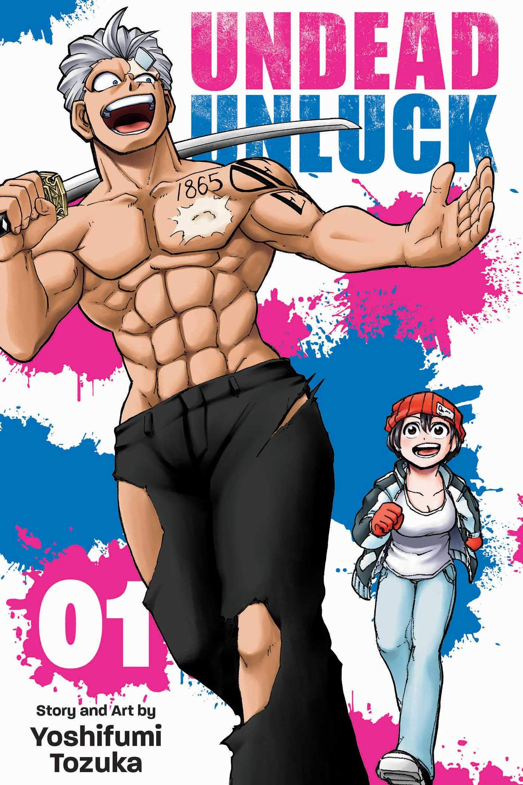
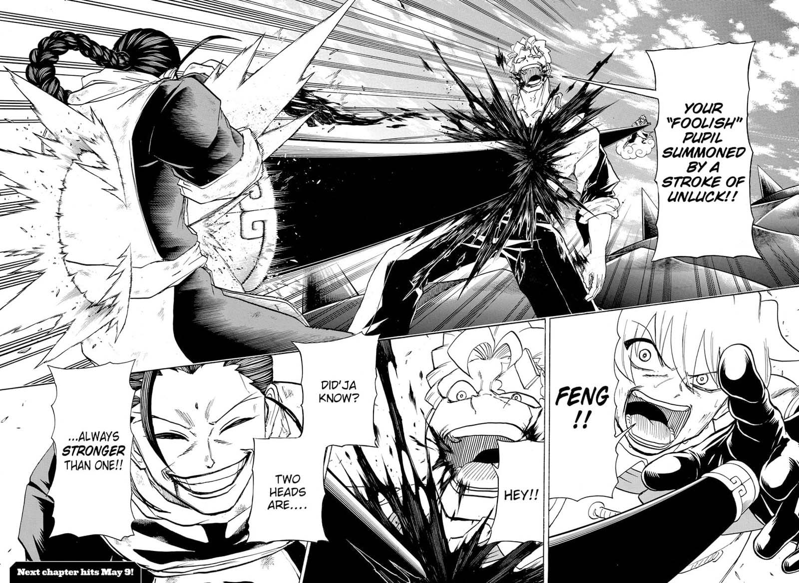

Un peu de contexte
Undead Unluck est une série de mangas écrite et illustrée par Yoshifumi Tozuka. L'histoire suit l'association improbable de deux individus, un garçon immortel "mort-vivant" nommé Andy et une fille nommée Fuuko qui possède la capacité d'annuler toutes les capacités physiques et surnaturelles qu'elle touche. Ensemble, ils entreprennent un voyage pour découvrir les secrets qui se cachent derrière leurs capacités et empêcher la sinistre organisation connue sous le nom de "Unreasoning" de déclencher un événement catastrophique sur le monde.
L'un des points forts de "Undead Unluck" est sa prémisse unique et intrigante. Le concept d'un protagoniste immortel et d'une héroïne nullifiante est frais et original, et il est fascinant de voir comment leurs capacités interagissent entre elles et avec le monde qui les entoure. La série met également en scène des personnages variés, chacun doté de capacités et de personnalités distinctes, ce qui ajoute de la profondeur et de la complexité à l'histoire.
Le style artistique de "Undead Unluck" est également impressionnant. Les illustrations dynamiques et expressives de Tozuka capturent l'action et l'émotion de l'histoire, et le design des personnages est visuellement frappant et mémorable.
Malgre tout la série présente quelques faiblesses comme Le rythme est parfois incohérent. Certains chapitres semblant précipités ou abrupts, tandis que d'autres s'éternisent. De plus, la série peut être assez violente et gore, ce qui peut ne pas être du goût de tout le monde.
Dans l'ensemble, "Undead Unluck" est une série de manga solide avec une prémisse unique, des personnages intéressants et des illustrations impressionnantes. Bien qu'elle ne convienne pas à tout le monde, les fans de mangas shonen remplis d'action et d'éléments surnaturels apprécieront probablement cette série. Et j'ai vraiment hate de voir comment l'adaptation en anime va se presente su la scene bien que selon moi, "Undead Unluck" peut trés largement se tenir au niveau d'un Kimetsu no Yaiba.
 Locks experience Requiem
Locks experience Requiem